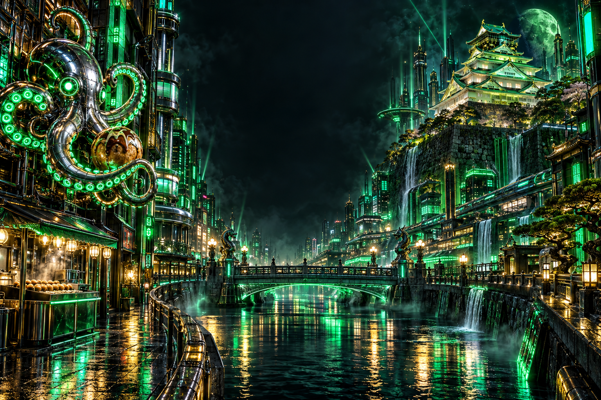

OSAKA / JAPANSTREAMER COLLECTIVE / 03
大阪発。熱狂をぶち上げろ。
せいｚ / トーマス / うわさのうどん
Z界 OSGせいｚTHOMASUWASA NO UDONOSAKA / JAPAN
01 / ABOUT USZ界 OSG
03三人、集結。
熱狂、点火。
せいｚ。トーマス。うわさのうどん。
OSG ── 大阪せいｚグループ。
この三人で、大阪を沸かす。
三人の配信へ ↘02 / THE CREWメンバー
HOST / 01主催
せいｚ
せいｚ
せいｚ / @seizKICK / ふわっち / ツイキャス
MEMBER / 02OSG CREW
THOMAS
トーマス
THOMAS / @thomas1022KICK / ふわっち
MEMBER / 03OSG CREW
UWASA NO UDON
うわさのうどん
うわさのうどん / @udonchannelKICK / ふわっち